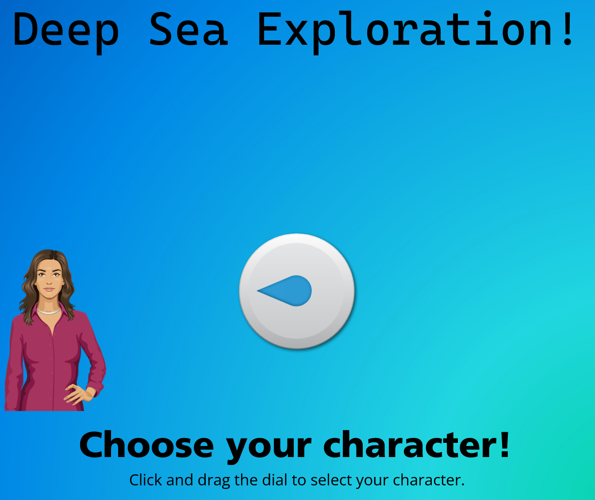
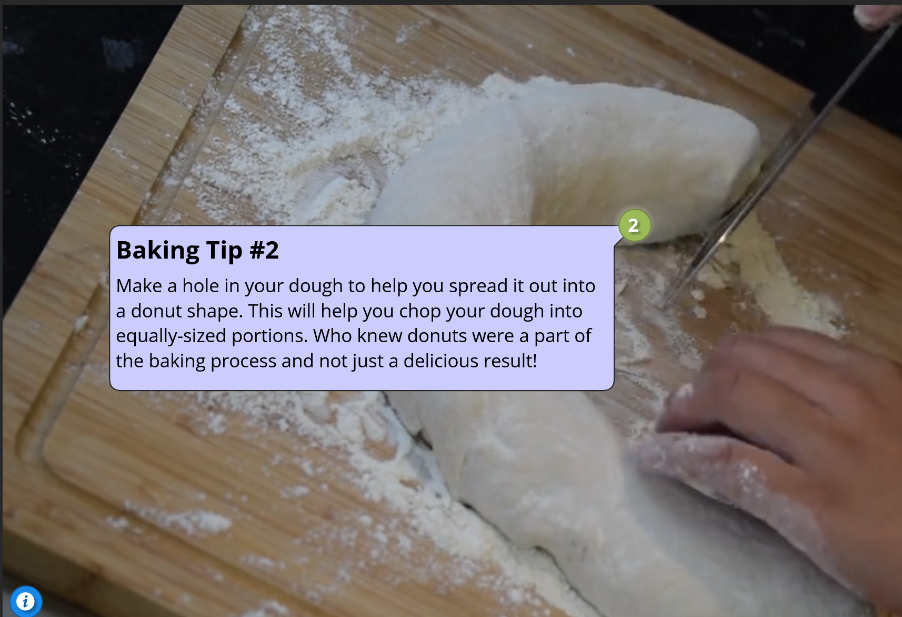
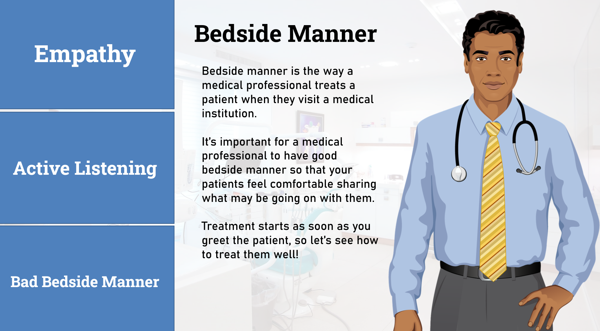
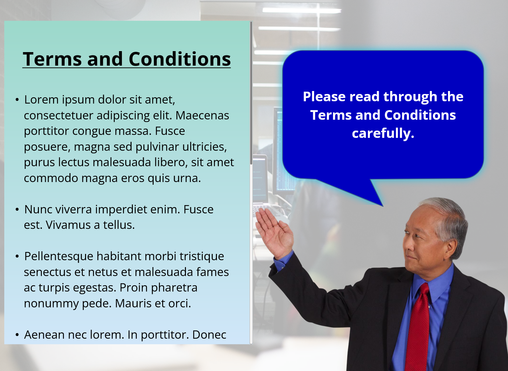
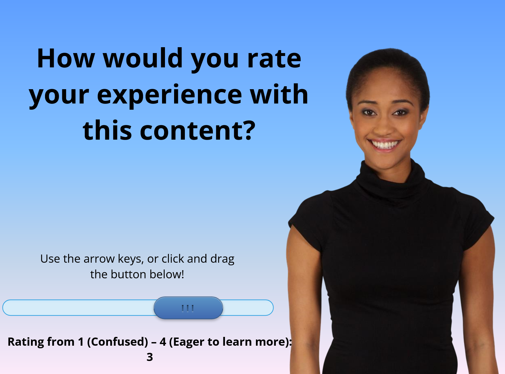
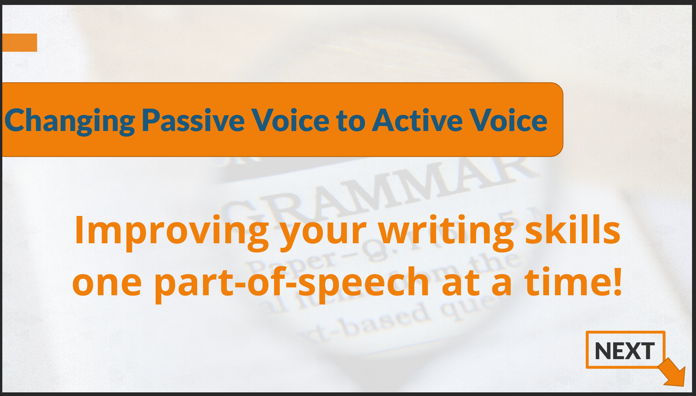
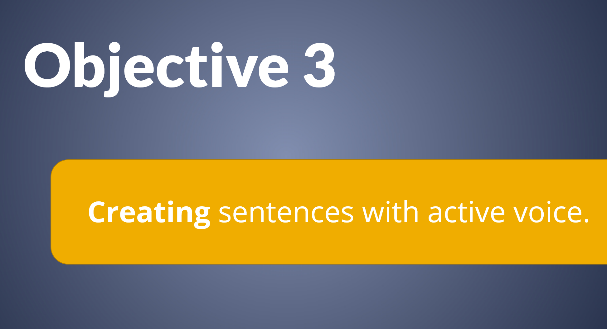
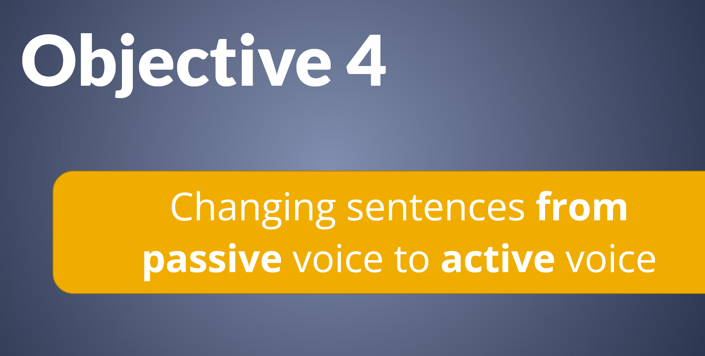
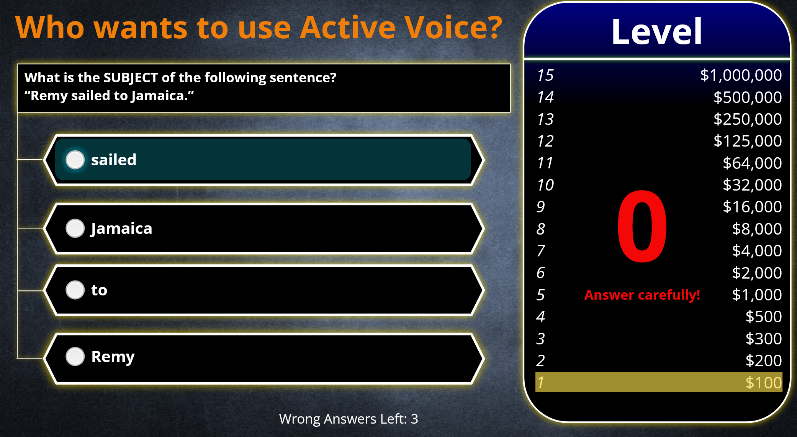

Projects
-

Choose Your Character
Objective: Engage learners in potentially info-dense with personalized characters to guide them through the course.
Target Audience: Orientation for diving company employees or attendees of deep sea exploration event.
Program Used: Articulate Storyline 360 -

Interactive Video
Objective: Display multi-page information about medical bedside manner using tabs, triggers, and states.
Target Audience: Bakers, HR departments
Program Used: Articulate Storyline 360 -

Bedside Manner Tab Explanation
Objective: Display multi-page information about medical bedside manner using tabs, triggers, and states
Target Audience: Orientation for new medical professionals.
Program Used: Articulate Storyline 360 -

Amazon Webpage Hotspots Explanation
Objective: Identify and explain features of a typical amazon webpage.
Target Audience: Users new to online shopfront webpages.
Program Used: Articulate Storyline 360 -

Branching Scenario
Objective: On-board new employees who will handle confidential information. Here's the storyboard used to draft the scenario.
Target Audience: New employee orientation.
Program Used: Articulate Storyline 360 -

Terms and Conditions Example
Objective: Display terms and conditions in a more engaging way than is typical using Storyline's scrolling panel.
Target Audience: Companies with documents requiring users to sign documents to show their consent.
Program Used: Articulate Storyline 360 -

Smiley Survey
Objective: Create a visual for a survey asking for users to rate their experience with content that would be shown before it.
Target Audience: Rating specialists, HRs
Program Used: Articulate Storyline 360 -
Orientation in Rise 360
Objective: Showcasing an engaging orientation for franchisee owners of loral shops using Articulate Rise 360.
Target Audience: Orientations, in particular, franchisee owners
Program Used: Articulate Storyline 360 -

Mastodon Explainer Video using Camtasia
Objective: Video walthrough of how to set up a Mastodon account that briefly goes through information on servers and instances.
Here's Mastodon's Official Guide to its site and their Official Instance Finder!
Target Audience: People interested in making a Mastodon account
Program Used: Camtasia 2022 Free Trial Version -

Grammar Lesson Passive vs. Active Part One
Objective: Educate or help learners review the difference between passive voice and active voice sentences by identifying the parts of a basic, simple sentence.
Target Audience: K-12, English Language Learners, Educators
Program Used: Articulate Storyline 360 -

Grammar Lesson Passive vs. Active Part Two
Objective: Educate or help learners review the difference between passive voice and active voice sentences by helping learners identify passive voice and active voice sentences.
Target Audience: K-12, English Language Learners, Educators
Program Used: Articulate Storyline 360 -

Grammar Lesson Passive vs. Active Part Three
Objective: Educate or help learners review the difference between passive voice and active voice sentences by showing how to create active sentences.
Target Audience: K-12, English Language Learners, Educators
Program Used: Articulate Storyline 360 -

Grammar Lesson Passive vs. Active Part Four
Objective: Educate or help learners review the difference between passive voice and active voice sentences by showing how to turn passive sentences into active sentences.
Target Audience: K-12, English Language Learners, Educators
Program Used: Articulate Storyline 360 -

Grammar Lesson Passive vs. Active - Summative Assessment
Objective: Educate or help learners review the difference between passive voice and active voice sentences by testing their knowledge. It's recommended to take this after viewing the Grammar Lessons over the content: Passive vs. Active.
Target Audience: K-12, English Language Learners, Educators
Program Used: Articulate Storyline 360